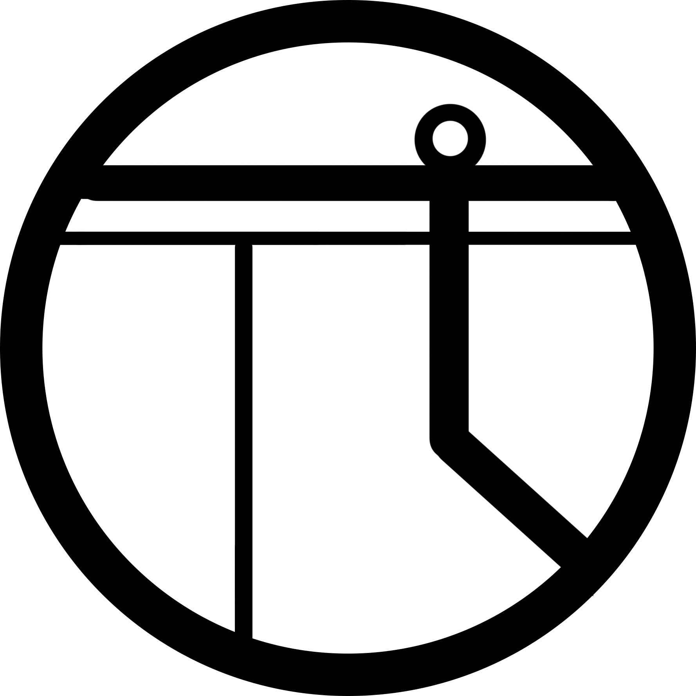

π-Δelta
Set 1, 10 marks per problem
-- "The Collatz Conjecture (3n+1 Problem)"

「Explore the mystery of mathematics together」
International Pi Thunder Tournament
Organizer: Pi Tournament Committee
Presented by: WLSA Shanghai Academy
Set 1, 10 marks per problem
-- "The Collatz Conjecture (3n+1 Problem)"
Set 2, 12 marks per problem
-- "Existence and smoothness of solutions to the Navier-Stokes equations"

Set 3, 15 marks per problem
-- "The Hodge conjecture (topological yoke of algebraic clusters)"

Set 4, 18 marks per problem | 1 additional mark for "tiebreaker" problem
-- "The twin prime conjecture (infinitely close lone primes)"

Set 5, 23 marks per problem | 2 additional mark for "tiebreaker" problem
-- “The Riemann hypothesis (The Plotter from Hell for the Distribution of Prime Numbers)”

Set 6, 30 marks per problem | 3 additional mark for "tiebreaker" problem
-- “The P vs. NP problem (the ultimate seal of the algorithmic abyss)”
Set 7, 20 marks per problem | partial marks will be awarded accordingly
-- “The Birch and Swinnerton-Dyer Conjecture (The Code of Silence for Elliptic Curves)”


Explore, explore, and explore